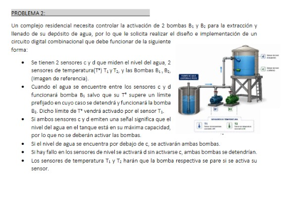
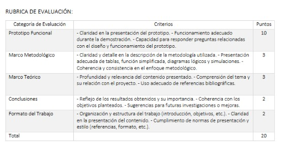
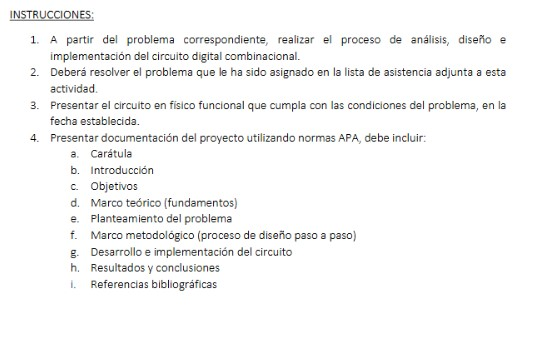

Proyecto: Diseño e Implementación de Circuito Digital Combinacional
El curso de Lógica en Sistemas fue una asignatura fundamental para comprender cómo se construyen soluciones a partir del razonamiento lógico, el análisis de condiciones y la representación de procesos mediante expresiones booleanas, tablas de verdad y circuitos digitales.
Esta materia permitió relacionar la teoría con la práctica, ya que no solo se trabajaron conceptos escritos o fórmulas, sino que también se aplicaron esos conocimientos en la elaboración de un circuito físico utilizando componentes electrónicos. Esto ayudó a comprender mejor cómo la lógica puede utilizarse para resolver problemas reales dentro del área de sistemas y electrónica digital.
A través del curso se desarrollaron habilidades de análisis, interpretación, ordenamiento de variables y resolución de problemas. Cada ejercicio requería estudiar una situación, identificar condiciones, definir salidas y construir una solución lógica que pudiera representarse de forma clara y funcional.
El proyecto desarrollado se llamó "Diseño e Implementación de Circuito Digital Combinacional". Fue un proyecto individual enfocado en el control de bombas de agua dentro de un complejo residencial.
El problema asignado fue el número 2, el cual consistía en controlar el funcionamiento de dos bombas, identificadas como B1 y B2. Para resolverlo, fue necesario analizar diferentes condiciones relacionadas con sensores de nivel de agua y sensores de temperatura.
El objetivo era determinar en qué momentos las bombas debían activarse o detenerse, dependiendo de las señales recibidas por los sensores. Esto convirtió el proyecto en un ejercicio completo de análisis lógico, ya que cada combinación de entradas podía generar una respuesta diferente en el sistema.
El primer paso del proyecto fue analizar cuidadosamente el planteamiento del problema. Para ello se identificaron las variables de entrada, las condiciones que debían cumplirse y las salidas esperadas. Esta parte fue importante porque una mala interpretación del problema podía afectar todo el resultado final.
Después de identificar las variables, se elaboraron tablas de verdad para representar todas las posibles combinaciones de entradas. Estas tablas permitieron visualizar de forma ordenada cuándo debía encenderse o apagarse cada bomba, según el estado de los sensores.
Posteriormente se obtuvieron las expresiones lógicas correspondientes. Estas expresiones fueron simplificadas utilizando procedimientos de lógica booleana, con el propósito de reducir la complejidad del circuito y hacerlo más eficiente.
Luego se realizaron diagramas lógicos para representar gráficamente la solución. En estos diagramas se utilizaron compuertas lógicas, las cuales permitieron mostrar cómo se conectaban las señales para obtener el comportamiento esperado.
Después de completar el análisis teórico, el circuito fue implementado físicamente en una protoboard. Para ello se utilizaron circuitos integrados, cables, fuente de alimentación y otros componentes electrónicos necesarios para comprobar el funcionamiento del sistema.
La implementación práctica fue una de las partes más importantes del proyecto, porque permitió comprobar si las operaciones realizadas en papel realmente funcionaban en un circuito físico. Esta etapa ayudó a relacionar la teoría con la práctica y a comprender mejor cómo los errores de conexión pueden afectar el resultado.
También fue necesario revisar conexiones, validar salidas y comprobar que el circuito respondiera correctamente según las condiciones planteadas. Esto permitió desarrollar paciencia, precisión y atención al detalle.
El objetivo principal fue diseñar e implementar un circuito digital combinacional capaz de controlar el funcionamiento de bombas de agua mediante sensores de nivel y temperatura.
Además, se buscó aplicar conceptos de lógica digital, simplificación de funciones, uso de compuertas lógicas y validación práctica mediante una implementación en protoboard.
Este proyecto permitió fortalecer el análisis lógico, ya que fue necesario interpretar condiciones y convertirlas en expresiones ordenadas. También ayudó a mejorar la resolución de problemas, porque el circuito debía responder correctamente a distintas situaciones.
Entre las habilidades trabajadas se encuentran la interpretación de variables, construcción de tablas de verdad, uso de fórmulas booleanas, simplificación lógica, diseño de circuitos, representación mediante diagramas y validación práctica en hardware.
Además, el proyecto ayudó a desarrollar pensamiento estructurado, porque cada parte debía seguir un orden: primero comprender el problema, luego organizar las variables, después elaborar la tabla, simplificar las funciones, dibujar el circuito y finalmente implementarlo físicamente.
Uno de los aprendizajes más importantes fue comprender que la lógica es una base esencial dentro de la Ingeniería en Sistemas. Aunque el proyecto estaba relacionado con circuitos digitales, el proceso de análisis también se conecta con la programación, ya que en ambos casos se trabaja con condiciones, decisiones y resultados.
También aprendí que resolver un problema lógico requiere orden y precisión. No basta con llegar a una respuesta rápida, sino que es necesario justificar cada paso, comprobar las combinaciones posibles y validar que la solución sea correcta.
Otro aprendizaje importante fue la relación entre teoría y práctica. El circuito construido en protoboard permitió comprobar físicamente el trabajo realizado, mostrando que los conceptos de lógica digital pueden aplicarse a situaciones reales.
Una de las principales dificultades fue interpretar correctamente todas las condiciones del problema. Al trabajar con sensores, niveles de agua, temperatura y dos bombas diferentes, era necesario tener mucho cuidado para no confundir las entradas y salidas.
Otra dificultad fue la simplificación de funciones, ya que este proceso requiere práctica y concentración. También fue un reto llevar el diseño teórico a una protoboard, porque una conexión incorrecta podía hacer que el circuito no funcionara como se esperaba.
A pesar de estas dificultades, el proyecto permitió reforzar los conocimientos y demostrar que con análisis, revisión y práctica es posible resolver problemas complejos paso a paso.
Este proyecto fue importante porque permitió comprender cómo la lógica digital puede aplicarse en sistemas de control. Aunque el ejemplo estaba basado en bombas de agua, el mismo tipo de razonamiento puede utilizarse en otros sistemas automatizados, sensores, alarmas, controles eléctricos y procesos tecnológicos.
Además, el proyecto ayudó a desarrollar una base útil para la programación. Conceptos como condiciones, entradas, salidas, verdadero, falso y toma de decisiones aparecen constantemente en el desarrollo de software.
Las siguientes imágenes muestran evidencias del trabajo realizado en el proyecto, incluyendo partes del análisis, documentación y desarrollo práctico.



En el siguiente video se explica el desarrollo del proyecto de Lógica en Sistemas, mostrando el proceso general, la finalidad del circuito y los aprendizajes obtenidos durante la actividad.
El proyecto de Lógica en Sistemas permitió aplicar conocimientos teóricos en una situación práctica. A través del diseño e implementación del circuito combinacional, se comprendió mejor la importancia de analizar condiciones, organizar información y validar resultados.
Esta experiencia fortaleció habilidades importantes para la carrera, como la resolución de problemas, el pensamiento lógico, la precisión y la capacidad de convertir una situación real en una solución técnica. También dejó una base útil para futuros cursos relacionados con programación, electrónica digital y sistemas automatizados.